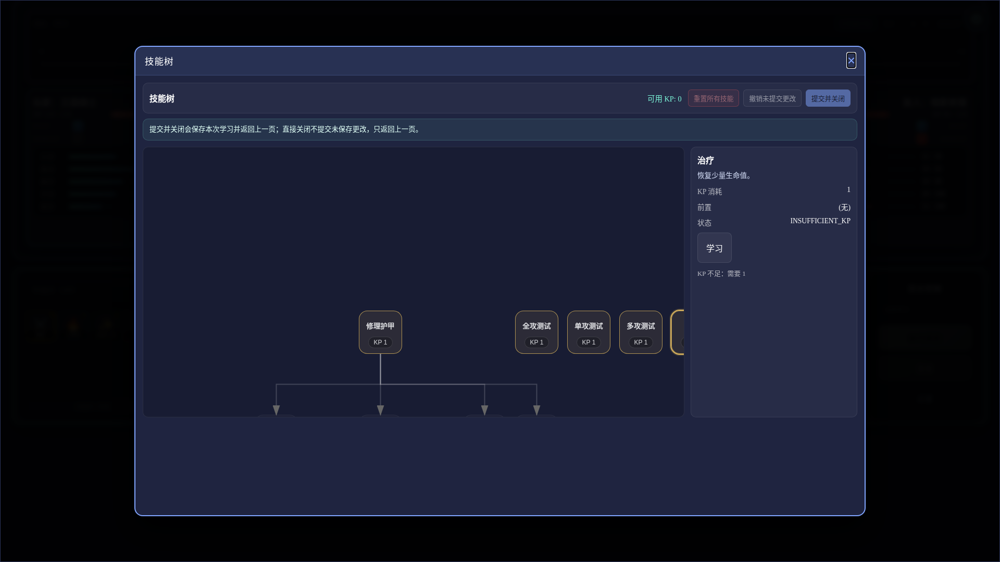

当前技能树问题标注
基于运行页 1920 x 1080 截图与 DOM 尺寸报告；这里标的是会直接影响体验的结构问题。
1. 首屏没有把树放进视口
节点坐标来自编辑器，默认 pan/zoom 没有自动 fit。打开后上方大面积空白，真正的分支被压在画布下半部。
2. 运行态混入测试节点
“单攻测试 / 多攻测试 / 验收轻击”等节点出现在玩家技能树里，破坏世界观，也增加阅读噪音。
3. 详情栏挤压并遮挡树
画布宽 1040px，右侧固定 320px；右边缘节点会被详情栏附近裁切，看不完整。
4. 路径语义不清
连线和节点主要靠弱边框表达状态；玩家难以判断“已学、可学、锁定、推荐路径、互斥分支”的优先级。
5. 操作说明占高位但不解决决策
提交/关闭说明必要，但当前没有转化成“下一步学什么、为什么不能学、学后影响什么”的构筑反馈。